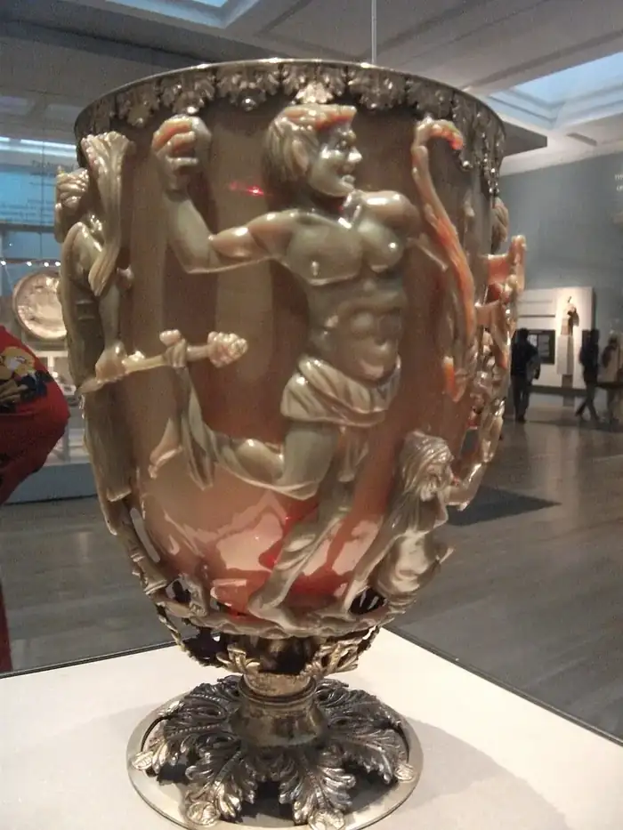
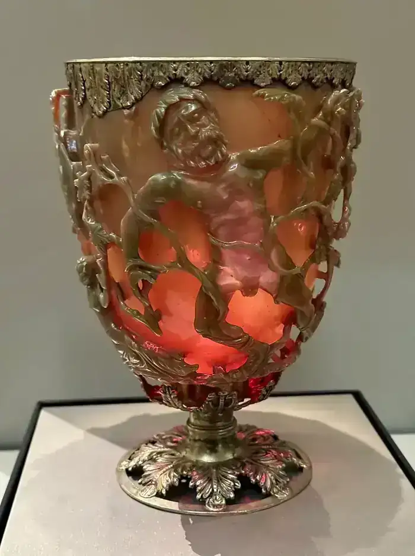
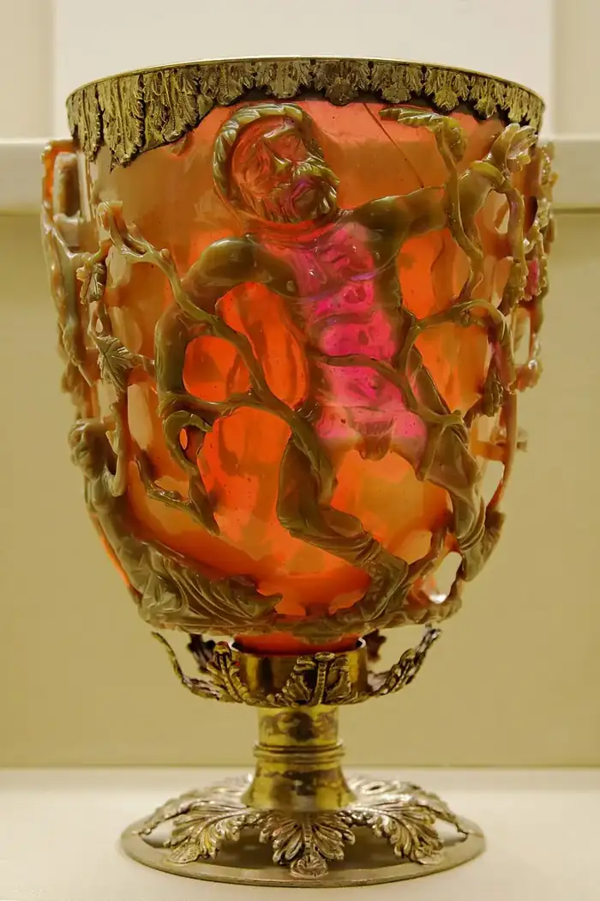

The object
The Lycurgus Cup is a fourth-century Roman cage cup in the British Museum, decorated with a scene of Lycurgus. It is dichroic: it appears green when light reflects off it, and red when light shines through it. It is the only complete object of its kind known.
Maps, diagrams and images






The explanation
Analysis in the 1990s found that the glass contains nanoparticles of gold and silver, roughly 50 nanometres across, in a ratio that produces the colour change through surface plasmon resonance. The effect depends on the size and separation of the particles, which the Roman glassmakers controlled without knowing why.
This is the standard example of 'ancient nanotechnology', and it is a fair description of the material — but not of the knowledge. The glassmakers had a recipe that worked, not a theory of plasmonics. The modern interest is in what can be learned from the recipe, not in what the Romans knew.
Documented: the cup, its date, and its dichroism.
Documented: the gold and silver nanoparticles and the plasmon mechanism.
Documented: that the effect was produced by a controlled process.
Not established: that the makers understood the mechanism.
The honest label: documented — a real achievement with a modern explanation, and a reminder that 'nanotechnology' is a description, not a claim about intent.
Why it is in the archive
Because it is the counter-example to the out-of-place-artefact genre: an object that really does look impossible, whose explanation is a real scientific result rather than a fantasy.
Open resources on this topic
- PapersOpen-access articles: DOAJ · PubMed Central · Internet Archive Scholar
- BooksPublic-domain and borrowable copies: Open Library · Project Gutenberg · Google Books · Internet Archive
More images
Cite this page
Momin, S. (2026). The Lycurgus Cup. The Larger World Archive. https://drsamonline.github.io/LARGE_GLOBE/lycurgus-cup.htmlMomin, Sohil. “The Lycurgus Cup.” The Larger World Archive, 2026, https://drsamonline.github.io/LARGE_GLOBE/lycurgus-cup.html.Momin, Sohil. “The Lycurgus Cup.” The Larger World Archive, 2026. https://drsamonline.github.io/LARGE_GLOBE/lycurgus-cup.html.@misc{the2026lycurgus,
author = {Momin, Sohil},
title = {The Lycurgus Cup},
year = {2026},
howpublished = {The Larger World Archive},
url = {https://drsamonline.github.io/LARGE_GLOBE/lycurgus-cup.html},
note = {Last reviewed 20 November 2026}
}Last reviewed 20 November 2026 · Corrections policy · this page is not peer reviewed
Sources for this page
- Wikipedia, “Lycurgus Cup” — the object and its analysisen.wikipedia.org
- Wikipedia, “Surface plasmon resonance” — the optical mechanismen.wikipedia.org
- Wikipedia, “Dichroic glass” — the effecten.wikipedia.org
- Wikipedia, “Roman glass” — the industry that made iten.wikipedia.org